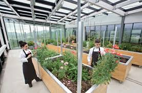
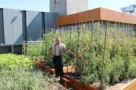

Café Verde
Cafetería con huerto urbano
Ingredientes frescos cultivados en su propio huerto para una experiencia gastronómica única.
Este emprendimiento incluye:
Ingredientes 100% frescos
Menús estacionales
Cultivo sostenible
Cero intermediarios
 
Tu navegador no soporta videos.